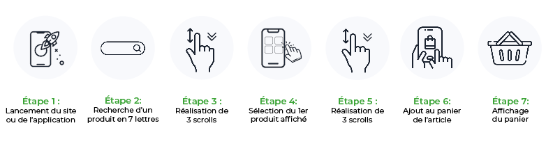
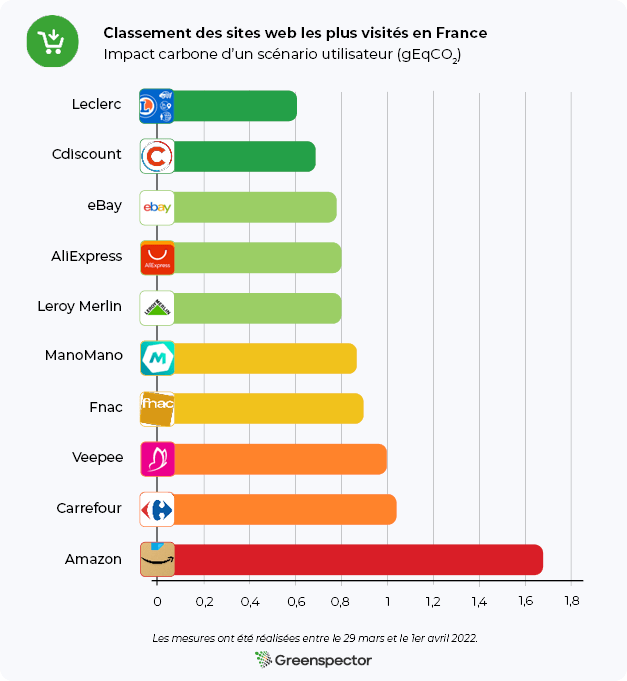
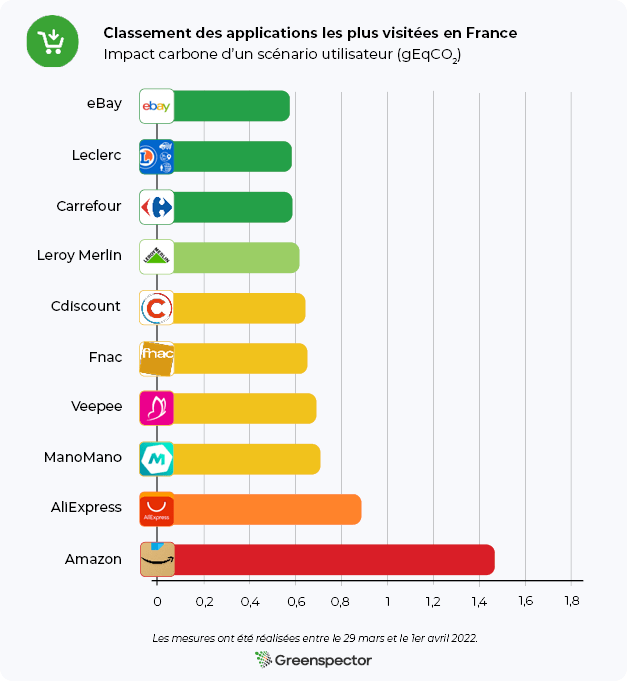

Introduction
Le marché du e-commerce en France connaît une croissance très importante. Les ventes e-commerce sont passées de 57 milliards en 2014 à 112,2 milliards d’euros en 2021. Cette croissance s’explique en partie par la crise sanitaire. Cela a considérablement augmenté les achats en ligne et créé des habitudes chez les Français. Parmi ces ventes, celles sur mobile ont connu une croissance impressionnante. Elles ont augmenté de 13 % en 2021. Près d’un Français sur deux (48%) fait aujourd’hui des achats via son téléphone. Un Français sur trois (34%) achète via son téléphone au moins une fois par mois.
Accès rapides
Classement de l’empreinte des 10 sites web
Projections des impacts carbone
Classement de l’empreinte des 10 applications
Conclusion
Tableau des résultats
Méthodologie
L’abandon de panier représente 18 milliards de dollars de pertes de vente chaque année. Ce taux d’abandon est plus élevé sur mobile (97%) que sur ordinateur (entre 70 et 75%). Les raisons sont multiples : le prix, les coûts d’expédition, la rapidité de livraison, les réductions disponibles mais aussi le temps de chargement du site (Source). Les sites et applications de m-commerce ont donc tout intérêt à faire preuve de performance et de sobriété numérique.
Qu’en est-il des 10 sites et applications de m-commerce les plus visités en France ? Quels sont les sites et applications les plus frugaux sur lesquels faire son e-shopping en toute sobriété ?
Choix des sites et applications
Pour déterminer quels sites et quelles applications étudier, nous nous sommes appuyés sur le classement des sites et applications e-commerce réalisé par Médiamétrie et la Fevad (Fédération du e-commerce et de la vente à distance). Il s’agit des sites et applications les plus visités en France au 2ème trimestre 2021.

La particularité de cette étude est qu’elle est basée sur un scénario commun qui va de la recherche et consultation d’un produit jusqu’à la consultation du panier avant paiement. Ceci permet d’être au plus proche des usages réels des internautes et mobinautes.

Classement de l’empreinte environnementale des 10 sites de m-commerce les plus visités en France
Les 3 sites les moins impactants sont : Leclerc, Cdiscount et Ebay.
Les 3 sites les plus impactants sont : Amazon, Carrefour et Veepee.
Nous observons plus de 2,7 fois plus d’impact entre le site le moins impactant (Leclerc) et le site le plus impactant (Amazon) de ce classement.
La moyenne d’impact carbone de ces 10 sites web est de 0,92 gEqCO2 pour une durée moyenne du scénario de 1 minute et 54 secondes, soit l’équivalent de 8 mètres effectués en véhicule léger.

Projection des impacts carbone sur un mois
Considérons que 55% du trafic global du e-commerce passe par le mobile, contre 39% par le PC et 6% par la tablette (Source).
Si l’on projette l’impact carbone de ces 10 sites e-commerce pour en moyenne 37,41 millions de visites par mois ayant une durée de 5 minutes et 54 secondes, cet impact serait de 439,6 tonnes d’EqCO2 par mois (87,5 tonnes sur mobile, 341,0 tonnes sur PC et 11,1 tonnes sur tablette). C’est l’équivalent de 98 fois la circonférence de la Terre parcourue en véhicule léger.
Concernant le meilleur site web de ce classement (Leclerc) pour 9,99 millions de visites / mois ayant une durée moyenne de 3 minutes, cet impact serait de 37,0 tonnes d’EqCO2 par mois (5,9 tonnes sur mobile, 30,3 tonnes sur PC et 0,8 tonne sur tablette). C’est l’équivalent de 8 fois la circonférence de la Terre parcourue en véhicule léger.
Concernant le site web le moins bon de ce classement (Amazon) pour 164,32 millions de visites / mois ayant une durée moyenne de 8 minutes, l’impact carbone serait de 2639,4 tonnes d’EqCO2 par mois (588,1 tonnes sur mobile, 1978,4 tonnes sur PC et 72,9 tonnes sur tablette). C’est l’équivalent de 588 fois la circonférence de la Terre parcourue en véhicule léger.
Le focus de nos experts Greenspector sur le site le plus sobre : Leclerc
Le site web Leclerc se distingue surtout au niveau des étapes de recherche, de visualisation d’un produit et de visualisation du panier. En effet, ce site consomme peu d’énergie sur ces phases par rapport à ses concurrents. Seules les informations essentielles sont présentes sur cette page de recherche (nom des produits, prix, disponibilité). Sur la fiche produit, il y a la possibilité d’ajouter rapidement le produit au panier, et des menus déroulants sont proposés si le client souhaite plus d’informations. Ce site est également celui qui échange le moins de données pour réaliser le scénario complet.

En rentrant plus en détail sur la page de recherche d’un produit, beaucoup de bonnes pratiques sont appliquées. Il y a peu d’échanges réseaux avec 12 requêtes HTTP et un seul fichier CSS. Le chargement différé (lazy-loading) des images est appliqué.
Le focus de nos experts Greenspector sur le site le moins sobre : Amazon
Le site web d’Amazon tient son mauvais classement principalement des étapes de recherche et de visualisation d’un produit. En effet, ce site consomme beaucoup d’énergie sur ces phases, et échange beaucoup de données. Il y a 9,10 Mo de données échangées pour la phase de recherche (contre 1,03 Mo pour Leclerc), et 5,58 Mo de données échangées pour la fiche produit (contre 0,18 Mo pour Leclerc). Lors de la recherche, beaucoup d’informations apparaissent (indication « Suggestions », « Sponsorisé », « Amazon Choice » ou « N°1 des ventes », nom du produit, note, nombre d’avis, prix, réduction, date de livraison). Une vidéo publicitaire en autoplay apparaît même au milieu des produits. Lors de la visualisation du produit, beaucoup d’informations apparaissent également (offres, dates de livraison en cas de livraison gratuite ou accélérée, détails du produit, produits fréquemment achetés ensemble…). De plus, le client est obligé de scroller avant de pouvoir accéder et cliquer sur le bouton « Ajouter au panier ».

En rentrant plus en détail sur la page de recherche d’un produit, il y a beaucoup d’échanges réseaux avec 109 requêtes HTTP et 9 fichiers CSS. Le chargement différé (lazy-loading) des images n’est pas appliqué, ce qui implique un chargement des images non visibles à l’écran. Cette pratique est à proscrire, car l’utilisateur ne scrollera pas forcément jusqu’à ces images.
Classement de l’empreinte environnementale des 10 applications de m-commerce les plus visités en France
Les 3 applications les moins impactantes sont : eBay, Leclerc et Carrefour.
Les 3 applications les plus impactantes sont : Amazon, AliExpress et ManoMano.
Nous observons plus de 2,8 fois plus d’impact entre l’application la moins impactante (eBay) et l’application la plus impactante (Amazon) de ce classement.
La moyenne d’impact carbone de ces 10 applications est de 0,69 gEqCO2 pour une durée moyenne du scénario de 2 minutes et 1 seconde, soit l’équivalent de 6 mètres effectués en véhicule léger.


L’application eBay tient sa première place des phases du lancement de l’application et de la visualisation du panier. En effet, lors de ces phases, cette application consomme peu d’énergie. De plus, elle échange peu de données sur toute la durée du scénario (seulement 0,53 Mo).
Le focus de nos experts Greenspector sur l’application la moins sobre : Amazon
Amazon se retrouve une nouvelle fois à la dernière place du classement, loin derrière ses concurrents. Ce résultat s’explique à nouveau par les phases de recherche et de visualisation du produit, où cette application consomme beaucoup plus d’énergie que les autres. En termes de données échangées, nous observons 8,22 Mo pour la recherche (contre 0,23 Mo pour eBay) et 2,6 Mo pour la fiche produit (contre 0,13 Mo pour eBay).
Bilan
Que ce soit pour les sites web ou les applications de m-commerce les plus visités en France, nous constatons un impact près de trois fois plus important entre la plateforme la plus sobre et celle la plus impactante.
Cela montre qu’en gérant différemment les informations visibles à l’écran, le chargement des images, la consommation des scripts et les données échangées au cours du scénario, il est possible de diminuer l’impact environnemental d’un site web et d’une application mobile.
En tant que e-shopper utilisant son mobile, il vaut mieux passer par les applications que par les sites web. En effet, sur le scénario étudié, les sites web impactent en moyenne 39% de plus. Seul AliExpress a une consommation plus importante sur application que sur site web. Cependant, les applications ont un impact au niveau de leur téléchargement et de leurs mises à jour. Elles sont donc à privilégier seulement en cas de commandes régulières.
Cela dit, en termes de sobriété numérique, rien n’égalera le fait d’acheter les produits alimentaires au marché et les autres produits chez des commerçants locaux, bien entendu !
Tableau des résultats
Classement des 10 sites web les plus visités en France
[table “sites_m_commerce_22” not found /]Classement des 10 applications les plus visitées en France
[table “Applications_m_commerce_22” not found /]Méthodologie Greenspector
Pour chaque site et chaque application, mesurés sur un Samsung Galaxy Note 8 (Android 9), les mesures ont été réalisées à partir de scripts utilisant le langage GDSL (Greenspector Domain-Specific Language). Ce langage permet d’automatiser des actions à réaliser sur un téléphone. Les mesures ont été réalisées entre le 29 mars et le 1er avril 2022.
Détail du scénario commun aux 20 mesures :
-Lancement du site ou de l’application
-Pause de 30 secondes sur la page d’accueil
-Recherche d’un produit en passant par la barre de recherche, puis visualisation des produits proposés
-Sélection d’un produit, puis visualisation de ses caractéristiques (détails, avis…)
-Ajout du produit au panier
-Pause de 30 secondes sur la page du panier
Chaque mesure est la moyenne de 5 mesures homogènes (avec un écart-type faible). Les consommations mesurées sur le smartphone donné selon un réseau de type wifi peuvent être différentes sur un PC portable avec un réseau filaire par exemple. Pour chacune des itérations sur les sites internet, le cache est préalablement vidé.
Côté projection de l’empreinte, les paramètres pris en compte pour réaliser ces classements sont :
- Ratio de visualisation : 100% Smartphone
- Ratio de visualisation : 100% France
- Localisation des serveurs : 100% Monde
Découvrez comment Greenspector évalue l’empreinte environnementale d’un service numérique.